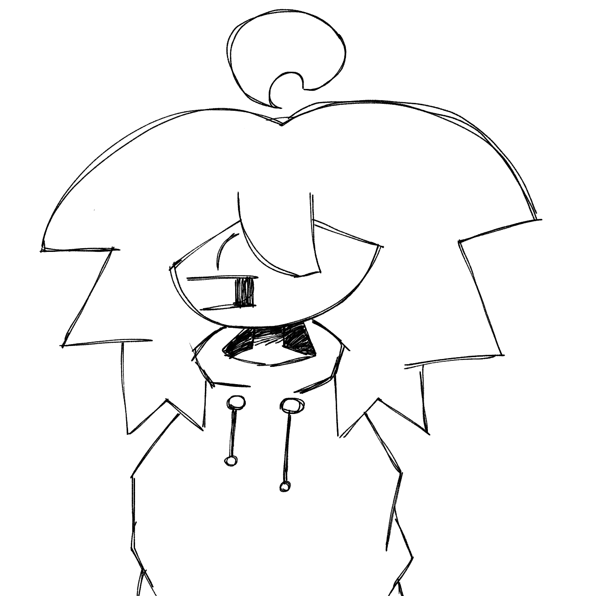
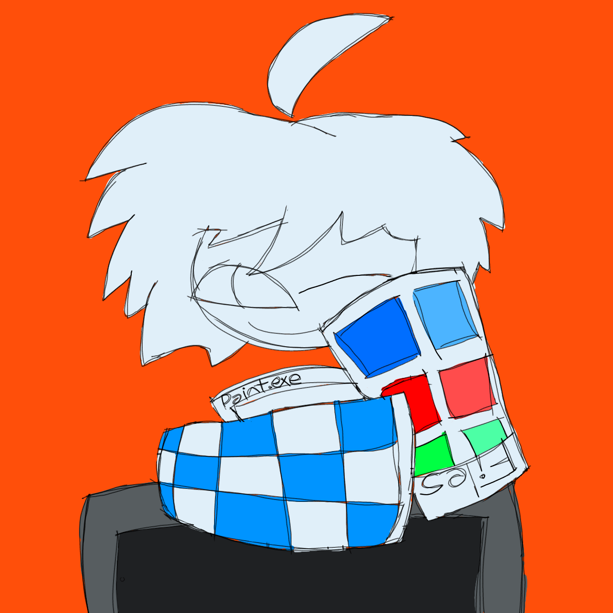

AVISO: Pagina Incompleta
!!! ⚠ Tenha certeza que você foi avisado que essa pagina esta em desenvolvimento ⚠ !!!
"Sabe.. muitas pessoas ja tiveram varias vidas pelo caminho sabia?" - Zero
| Relacionamentos: |
Apelido: |
| Doom (Parceiro bem proximo) |
"Zerinho" por Doom |
| Espectro (Amigo e Chefe da Mafia Black) |
"Zerildo" por Espectro |
| Gustta (Amigo Necessitado e Conhecido) |
"Zerinho-um" por Gustta |
| Void (Amigo) |
|
| Marshadow (Amigo Pokémon) |
|
| White (Amigo e Artista) |
|
| Kitkat (Parasita e Amigo) |
|
| Kutio (Parceiro de Programação e Pupilo) |
|
| Nikosil ("Atras do ponto de Ônibus" e Amigo) |
|
| Lucky (Amigo Bicolor) |
|
| Catmorato (Amigo Bicolor) |
|
Atualmente seus relacionamentos são parciais e tranquilas, aparentemente não
se encontrando em constancia também mas considera Catnap e Gtubers amigos bem
proximos como se fossem parceiros do jogo, Kutio é considerado pupilo atual
de script luau do Roblox Studio pois ele é um pouco calouro na sua área de
programação, Nikosil é o ponto da agulha no JJS (Jujutsu Shenaningans) pois
o proprio é totalmente um boss ou Mahoraga so pra derrotar mas por causa do
da fraqueza de Zero e da falta de frequencia por causa que tem momentos que
estuda na escola, "Matematica tambem é materia-prima da programação e da
engenharia mecânica" ele diria como resposta.
Persona

No geral ele é representado por um personagem de cabelo pouco volumoso com um
cabelo rebelde, casaco branco, e uma calça quadriculada em preto e magenta
representado aquela famosa textura de erro dos jogos 3d.

Na Robloxia no caso o jogo Roblox ele é representado por um personagem de
cabelo pouco volumoso com um cabelo rebelde, uma camisa de mangas longas com
ferramentas e cores do Microsoft Paint vinda do computador antigo da Microsoft
sendo o
Windows XP, e uma calça quadriculada em preto e magenta representado aquela
famosa textura de erro dos jogos 3d.
Informações Básicas